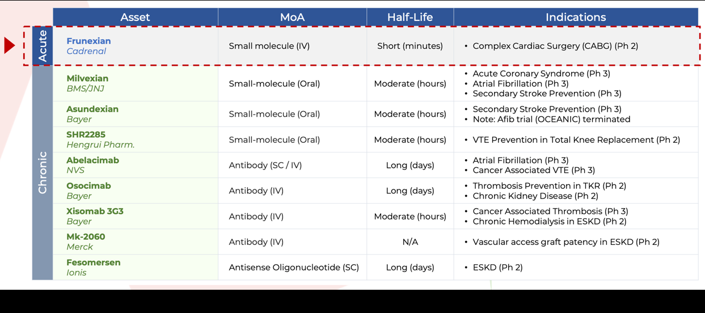

August 6, 2026
Add CVKD to your radar. This Nasdaq biotech has multiple catalysts converging in a high demand cardiovascular space, and it is still flying under the radar. Read full breakdown below.
Press Release
Cadrenal Therapeutics Announces End-of-Phase 2 Meeting with the FDA and Pivotal Phase 3 Registration Path for CAD-1005 in Heparin-Induced Thrombocytopenia (HIT)
3 months ago
Press Release
Cadrenal Therapeutics Announces Phase 2 Results with Encouraging Reductions in Thrombotic Events for CAD-1005
5 months ago
Analyst
Cadrenal's Quiet Expansion Play Is Starting to Get Loud
7 months ago
Analyst
Cadrenal's Anticoagulation Platform Is Expanding in a $40 Billion Market
7 months ago
*Sponsored
August 8, 2026
15 min read
9 catalysts are stacking up on a Nasdaq biotech (CVKD) that most traders haven't discovered yet, and the setup is getting harder to ignore.
The company holds breakthrough Factor XIa inhibitors , the same drug class that multiple Big Pharma companies are racing to dominate, plus a Phase 3-ready cardiovascular drug targeting populations with zero treatment alternatives .
In December 2025, the company announced a major pipeline expansion with the acquisition of CAD-1005 (formerly VLX-1005), a first-in-class Phase 2 drug for Heparin-Induced Thrombocytopenia that already has Orphan Drug and Fast Track designations from the FDA. Phase 2 results showed a greater than 25% absolute reduction in thrombotic events versus placebo, and the company has now successfully completed its End-of-Phase 2 meeting with the FDA, receiving guidance on a pivotal Phase 3 registration trial.
Zacks Small Cap Research published a new report valuing CVKD at $25 per share after incorporating CAD-1005 into its model — more than 300% upside from recent levels.
Source: Zacks Small Cap Research Report
Now add a low float of fewer than two million shares, and you'll see exactly why this profile has climbed to the top of my watchlist.
If you're looking for an under-the-radar biotech with meaningful catalysts lining up, this one demands immediate attention:
Cadrenal Therapeutics is a biopharmaceutical company developing therapeutics to address serious gaps in anticoagulation therapy. The company's lead asset, tecarfarin, is an investigational oral vitamin K antagonist designed for patients who face higher risks when using warfarin, including those with implanted cardiac devices or severe kidney conditions.
Tecarfarin is engineered to provide more predictable anticoagulation and reduce risks associated with stroke, heart attack, clot formation, and treatment volatility. Its unique metabolic design allows it to bypass many of the complications that limit the effectiveness of traditional warfarin.
And based on multiple catalysts now taking shape, CVKD has secured a top position on my watchlist.
Cadrenal is a late stage cardiovascular drug developer focused on advancing tecarfarin, a novel vitamin K antagonist designed as a safer and more stable alternative to warfarin. The company is specifically targeting patient populations that currently have no reliable anticoagulation options beyond warfarin, despite significant risks.
Warfarin remains difficult to manage because of drug interactions, genetic variability, kidney involvement, and frequent dose adjustments. Many patients remain outside the therapeutic range, which increases the likelihood of heart attack, stroke, bleeding, and death.
Tecarfarin has a Phase 3 ready profile supported by extensive clinical data. Studies show potential improvements in anticoagulation stability, including increased time in therapeutic range. This is a critical measure because stability is strongly correlated with reduced adverse events.
Key distinctions include:Tecarfarin is also being developed for patients with mechanical heart valves who struggle with warfarin due to genetic resistance, kidney dysfunction, or polypharmacy issues.
Because tecarfarin is the only next generation VKA being developed for these specific populations, Cadrenal is aiming to redefine standards of care in areas where therapeutic options have not progressed for decades.
Cadrenal's acquisition of assets from eXIthera added significant depth to its anticoagulation pipeline. These assets include frunexian, a first in class IV Factor XIa inhibitor, and EP 7327, an oral Factor XIa inhibitor in development for major thrombotic indications.
Factor XIa has emerged as one of the most validated targets in cardiovascular drug development. It plays a limited role in normal clotting but a major role in pathological thrombosis. This makes FXIa inhibition a promising strategy for reducing clot formation while maintaining lower bleeding risk.
Large pharmaceutical companies have invested billions into this space, underscoring its long term commercial and scientific potential.
Frunexian is currently the only intravenous small molecule Factor XIa inhibitor in active development for acute use cases. Two Phase 1 clinical studies produced strong results with frunexian well tolerated at all tested levels. aPTT increased in a dose proportional manner, PT remained unchanged confirming target specificity, and Factor XIa activity decreased consistently with dose.
The clinical data shows frunexian works exactly as designed. Higher doses create stronger anticoagulation effects that can be turned on and off rapidly. Most importantly, Phase 1 trials in humans showed no serious adverse events at any dose level tested, which has been the biggest challenge in anticoagulation drug development.
This gives Cadrenal a drug that hospitals can use during critical procedures like heart surgeries and catheter placements where precise, fast-acting blood thinning control is essential. Big Pharma has spent billions trying to develop drugs with this profile. Cadrenal acquired one that has already demonstrated favorable safety and activity in human trials and shown the exact pharmacological characteristics that make it commercially valuable.
The latest Zacks research report highlighted the competitive landscape for Factor XIa inhibitors, confirming that multiple major pharmaceutical companies all have active programs in this space. Frunexian stands apart as the only IV small-molecule FXIa inhibitor designed for rapid on/off acute hospital use, occupying a differentiated niche that the larger players are not targeting.

Factor XIa Inhibitor Competitive Landscape — Frunexian is the only IV small-molecule FXIa inhibitor in development for acute care settings.
Source: Cadrenal Therapeutics, Inc.
On April 30, 2026, Cadrenal Therapeutics announced that it hassp successfully completed its End-of-Phase 2 meeting with the FDA and received guidance on key elements of the Phase 3 pivotal trial for CAD-1005 in heparin-induced thrombocytopenia (HIT).
The FDA provided critical guidance on protocol design, study population, dosing, background therapy, exposure, the safety database, and the primary endpoint of new or worsening thrombotic events.
Based on FDA feedback, Cadrenal plans to advance directly to a randomized, blinded, placebo-controlled Phase 3 study evaluating CAD-1005 added to the current standard of care for patients with HIT. This will be the first randomized, blinded, placebo-controlled registration trial in HIT.
Planned Phase 3 HIT Trial Design:“Building on our Phase 2 experience with CAD-1005 in HIT and now with FDA guidance for Phase 3, Cadrenal is positioned to pursue a pivotal trial for the first new therapy for HIT in more than two decades,” said Quang X. Pham, Chairman and CEO of Cadrenal Therapeutics. “Interrupting the vicious cycle of platelet activation in HIT with CAD-1005 could be an important addition to our therapeutic armamentarium for this devastating condition,” said James Ferguson, M.D., Chief Medical Officer of Cadrenal Therapeutics.
What This Means For Investors: This is a major regulatory milestone. The FDA has now provided direct guidance on the Phase 3 trial design, confirming that the thrombotic events endpoint from the Phase 2 study is the path forward for registration. Cadrenal has a clear roadmap to a pivotal trial, a projected NDA submission in 2029, and the regulatory designations (Orphan Drug, Fast Track) to accelerate that timeline. CAD-1005 remains the only 12-LOX inhibitor in clinical development worldwide and the only treatment targeting the underlying immune drivers of HIT.
Company
CVKD . Nasdaq
Current Price
Market Cap
-1.63%